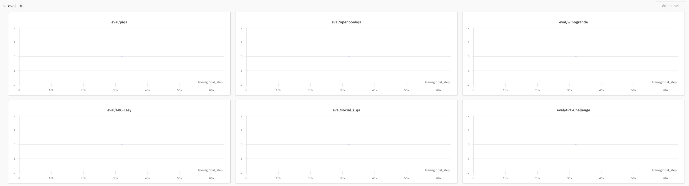

Prepare
和 LoReFT-Llama3-8B-Base-Commonsense-170k 相同。
Debug
新建窗口，运行以下命令：
# （在当前 "LoReFT" 的 conda 虚拟环境下）新建一个 screen，名为 LoReFT-llama3-8B-Instruct-Commonsense
screen -S LoReFT-llama3-8B-Instruct-Commonsense
# 运行程序
python train.py -task commonsense \
-data_dir dataset \
-model Meta-Llama-3-8B-Instruct \
-seed 42 \
-l all -r 8 -p f7+l7 -e 6 -lr 9e-4 \
-type LoreftIntervention \
-batch_size 4 \
-gradient_accumulation_steps 8 \
-eval_batch_size 2 \
--dropout 0.00 \
--test_split test \
--use_normalized_template \
--share_weights \
--warmup_ratio 0.1 \
--greedy_decoding \
-is_wandb \
-wandb_name prada-lab \
--wandb_proj just_fot_test
运行结束后发现居然 eval 模块所有的值均为 0！！！！！！

首先检查各个 eval 时产生的输出文件：在 /root/autodl-tmp/pyreft/examples/loreft/official_results/Meta-Llama-3-8B-Instruct.commonsense.20240507072419909892 中：
├── Meta-Llama-3-8B-Instruct.commonsense.20240507072419909892
│ ├── ARC-Challenge_test_outputs.json
│ ├── ARC-Easy_test_outputs.json
│ ├── args.json
│ ├── boolq_test_outputs.json
│ ├── eval_results.json
│ ├── hellaswag_test_outputs.json
│ ├── openbookqa_test_outputs.json
│ ├── piqa_test_outputs.json
│ ├── social_i_qa_test_outputs.json
│ ├── winogrande_test_outputs.json
随便打开一个 result.json 文件（以 ARC-Challenge_test_outputs.json 为例），发现其中的样例如下：
{
"instruction": "Please choose the correct answer to the question: An astronomer observes that a planet rotates faster after a meteorite impact. Which is the most likely effect of this increase in rotation?\n\nAnswer1: Planetary density will decrease. Answer2: Planetary years will become longer. Answer3: Planetary days will become shorter. Answer4: Planetary gravity will become stronger.\n\nAnswer format: answer1/answer2/answer3/answer4",
"raw_generation": "","generation":"","answer":"answer3"
}
可以看到，其中 raw_generation 和 generation 均没有输出，看过其他 json 文件也是如此。对比 LoReFT-Llama3-8B-Base-Commonsense-170k 结果中的 json 文件更为明显：
{
"instruction": "Please choose the correct answer to the question: An astronomer observes that a planet rotates faster after a meteorite impact. Which is the most likely effect of this increase in rotation?\n\nAnswer1: Planetary density will decrease. Answer2: Planetary years will become longer. Answer3: Planetary days will become shorter. Answer4: Planetary gravity will become stronger.\n\nAnswer format: answer1/answer2/answer3/answer4",
"raw_generation": "answer3",
"generation": "answer3",
"answer": "answer3"
}
思考其原因：由于模型训练时的曲线一切都正常，所以应该是出现在 eval 环节里，找到 train.py 的主要 eval 模块：
for dataset_name in eval_datasets:
# split evalset into chunks
for split, (eval_dataset, data_items) in eval_datasets[dataset_name].items():
generations, stats = compute_metrics(
task, dataset_name, reft_model, tokenizer, eval_dataset, data_items,
trigger_tokens, run_name, eval_batch_size,
data_collator if task in classification_tasks else None,
split, greedy_decoding, temperature, top_p, top_k
)
# log
eval_results.update(stats)
if is_wandb:
wandb.log(stats)
generations = stats if generations is None else generations
result_json_file_name = f"{output_dir}/{run_name}/{dataset_name}_{split}_outputs.json"
with open(result_json_file_name, 'w') as json_file:
json.dump(generations, json_file, indent=4)
可以看到，eval 主要调用了 compute_metrics 函数，在 compute_metrics.py 中找到该函数，发现针对模型 Meta-Llama-3-8B-Instruct，有两块主要的改动：
# 1
if "Meta-Llama-3-8B-Instruct" in tokenizer.name_or_path: # pretty bad workaround for llama-3, forgive me
terminators = [
tokenizer.eos_token_id,
tokenizer.convert_tokens_to_ids("<|eot_id|>")
]
trigger_tokens = "assistant\n\n"
# 2
if "Meta-Llama-3-8B-Instruct" in tokenizer.name_or_path: # pretty bad workaround for llama-3, forgive me
generation_args["eos_token_id"] = terminators
由于采用 Meta-Llama-3-8B-Base 模型时，一切正常，且没有这部分改动，因此 *** 将以上两部分注释掉 ***，重新进行训练（这次只采用 epoch=1，验证是否有效）：
python train.py -task commonsense \
-data_dir dataset \
-is_select \
-model Meta-Llama-3-8B-Instruct \
-seed 42 \
-l all -r 8 -p f7+l7 -e 1 -lr 9e-4 \
-type LoreftIntervention \
-batch_size 4 \
-gradient_accumulation_steps 8 \
-eval_batch_size 2 \
--dropout 0.00 \
--test_split test \
--use_normalized_template \
--share_weights \
--warmup_ratio 0.1 \
--greedy_decoding \
然而还是太慢了，因此考虑只训练一小部分数据集，进行加速：因为我们只需要观察在模型 eval 时是否有输出，因此可以这么做。
以下是要修改的部分：
在 train.py 的 main() 函数中，我们添加一个参数 is_select，用以说明是否进行测试：
parser.add_argument('-is_select', '--is_select', action='store_true')
在 finetune() 函数开始进行一些基本的 check：
if is_select:
assert task in {"commonsense", "math"}
在 task_config.py 内，对以上两个任务添加一个参数 selected_train_datasets：
task_config = {
"commonsense": {
"train_datasets": ["commonsense_170k"],
"selected_train_datasets": ["selected_commonsense_170k"],
...
},
"math": {
"train_datasets": ["math_10k"],
"selected_train_datasets": ["selected_math_10k"],
...
},
...
}
回到 train.py 文件中，在 train_dataset 的创建做以下改动：
if is_select and task in {"commonsense", "math"}:
train_datasets = task_config[task]["selected_train_datasets"] if train_dataset is None else [train_dataset]
full_train_datasets = task_config[task]["train_datasets"] if train_dataset is None else [train_dataset]
else:
train_datasets = task_config[task]["train_datasets"] if train_dataset is None else [train_dataset]
这里需要说明一点
为什么要创造一个额外的路径（例如 dataset/selected_commonsense_170k），而不在原来的路径下重新创造一个例如 selected_train.json 的文件？
原因是训练数据集文件的名称 ** 必须为 train.json**！！！否则会报错（要改动非常多），所以我们直接选择重新建立一个文件夹（例如 dataset/selected_commonsense_170k），存储挑选得到的数据集 train.json。
接着进行数据集的挑选：
# 产生 1000 个小的数据集进行测试
if is_select and task in {"commonsense", "math"}:
# initialize
selected_train_dataset_dir = os.path.join(data_dir, train_datasets[0])
full_train_dataset_dir = os.path.join(data_dir, full_train_datasets[0])
# create fileholder
if not os.path.exists(selected_train_dataset_dir):
os.makedirs(selected_train_dataset_dir)
print("filefolder has been created:", selected_train_dataset_dir)
# load original dataset
with open(os.path.join(full_train_dataset_dir, "train.json"), 'r') as file:
train_data = json.load(file)
# selection
selected_train_data = random.sample(train_data, 1000)
# save selected dataset
with open(os.path.join(selected_train_dataset_dir, "train.json"), 'w') as file:
json.dump(selected_train_data, file, indent=4)
print("selected train data load successfully")
\
我们将挑选后的数据放入 /dataset/selected_original_name/train.json 中，其余都不用改变，开始测试训练：
python train.py -task commonsense \
-data_dir dataset \
-is_select \
-model Meta-Llama-3-8B-Instruct \
-seed 42 \
-l all -r 8 -p f7+l7 -e 1 -lr 9e-4 \
-type LoreftIntervention \
-batch_size 4 \
-gradient_accumulation_steps 8 \
-eval_batch_size 2 \
--dropout 0.00 \
--test_split test \
--use_normalized_template \
--share_weights \
--warmup_ratio 0.1 \
--greedy_decoding
我都没运行完，因为很快，所以只需要有一两个 result.json 就可以观察结果了。我们找到存放结果的文件夹，打开其中一个文件：（以 boolq_test_outputs.json 为例）
[
{
"instruction": "Please answer the following question with true or false, question: does ethanol take more energy make that produces?\n\nAnswer format: true/false",
"raw_generation": "true",
"generation": "true",
"answer": "false"
},
...
]
成功有输出！！！说明我们将那两个注释掉是有用的！！
但是为了对比出注释真的有用，我们还需要还原注释的情况下重新训练，观察是否有输出。在训练完成后，我们打开其中一个结果文件：（以 boolq_test_outputs.json 为例）
[
{
"instruction": "Please answer the following question with true or false, question: does ethanol take more energy make that produces?\n\nAnswer format: true/false",
"raw_generation": "","generation":"","answer":"false"
},
...
]
可以看到注释的部分确实会让模型无法输出，因此将其注释掉后，重新训练。
# 1
# if "Meta-Llama-3-8B-Instruct" in tokenizer.name_or_path: # pretty bad workaround for llama-3, forgive me
# terminators = [
# tokenizer.eos_token_id,
# tokenizer.convert_tokens_to_ids("<|eot_id|>")
# ]
# trigger_tokens = "assistant\n\n"
# 2
# if "Meta-Llama-3-8B-Instruct" in tokenizer.name_or_path: # pretty bad workaround for llama-3, forgive me
# generation_args["eos_token_id"] = terminators
Train
重新开始训练：
screen -S LoReFT-llama3-8B-Instruct-Commonsense
# 运行程序
python train.py -task commonsense \
-data_dir dataset \
-model Meta-Llama-3-8B-Instruct \
-seed 42 \
-l all -r 8 -p f7+l7 -e 6 -lr 9e-4 \
-type LoreftIntervention \
-batch_size 4 \
-gradient_accumulation_steps 8 \
-eval_batch_size 2 \
--dropout 0.00 \
--test_split test \
--use_normalized_template \
--share_weights \
--warmup_ratio 0.1 \
--greedy_decoding \
-is_wandb \
-wandb_name prada-lab \
--wandb_proj just_fot_test